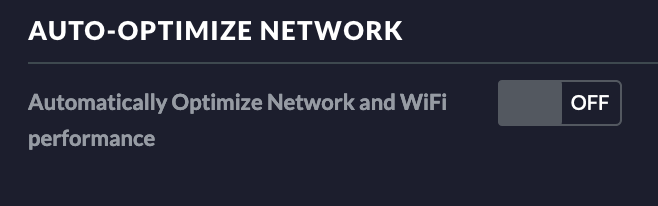

Ubiquiti Unifi with Sonos on a separate VLAN
Update 2023: these instructions are out-of-date for the latest Unifi controller software versions. It's preserved here as written for those who still have older versions. This post uses a file called gateway.config.json and Unifi now say:
This article is not applicable to the UniFi Dream Machine models, because all configurations are already available in the UniFi Network user interface.
So I take that to mean use of this file is deprecated and it should be possible to do this via the administration webpage.
Change network settings on Unifi controller
Further to getting my Unifi gear last year, I've started to organise the virtual local area networks (VLANs) to increase security. I've created a separate guest wifi network and a separate internet of things (IoT) network. One issue you'll run in to is that a lot of modern devices work by broadcasting their presence on the network and that doesn't work well normally across VLANs. None more so than Sonos, the home wireless speaker solution. Fortunately through trial and error with the help of Ubiquiti Forums - I've found a way to make it work.
First we need to switch off optimise network in settings:
Then in our network settings turn on IGMP snooping:
Set the IGMP Proxy up
Then we need to set up IGMP proxy on our Ubiquiti Security Gateway (USG).
Log in (password you can check on Cloud Key, 192.168.1.1 should be your USG's IP
address):
$ ssh admin@192.168.1.1
Then on the USG console, we'll set upstream (our network with sonos controllers
[for ex. iPhone, not on VLAN for me]) and downstream for the network with the Sonos hardware
(for me VLAN 20 Play:1, Play:3 etc. etc.).
$ configure
$ edit protocols igmp-proxy
$ set interface eth1 role upstream
$ set interface eth1 threshold 1
$ set interface eth1.20 role downstream
$ set interface eth1.20 threshold 1The configuration can now be show with (also enter these commands on USG):
$ show
and should look like this (obviously 20 VLAN should reflect which VLAN your speakers
are in!):
interface eth1 {
role upstream
threshold 1
}
interface eth1.20 {
role downstream
threshold 1
}If that's all OK we should save and commit (which will restart the IGMP proxy):
$ commit;save;exitPersist the IGMP Settings on Cloud Key
Then we can test our controllers work and can contact the speakers. If that works great! But now we need to add the configuration to our Cloud Key, since the next time the Unifi Security Gateway is provisioned, our configuration will be erased. Also, there is currently no graphical options for IGMP proxy on the Cloud Key, so we'll need to use a custom config.gateway.json. We can dump our current configuration on our USG:
$ mca-ctrl -t dump-cfg > config.gateway.jsonthen we need to edit it using vim to only contain our igmp section:
$ vim config.gateway.json
$ # Remove all the config except our IGMP proxyit should look like this, after you've finished editing it:
{
"protocols": {
"igmp-proxy": {
"interface": {
"eth1": {
"role": "upstream",
"threshold": "1"
},
"eth1.20": {
"role": "downstream",
"threshold": "1"
}
}
}
}
}if unsure, use https://jsonlint.com to double check syntax:
$ cat config.gateway.json
$ # Copy nand paste in to JSONlint to check
Once we are happy our configuration is valid, let's copy it to our Cloud Key
(replace 192.168.1.2 with your Cloud Key's IP address, password is your unifi
account password with root user, check the unifi config path):
$ scp config.gateway.json root@192.168.1.2:/usr/lib/unifi/data/sites/default/config.gateway.json
Then run a force provision on the USG from the Cloud Key web interface and then
check the config remains intact (replace 192.168.1.1 with your USG's IP address):
$ ssh admin@192.168.1.1
$ configure
$ edit protocols igmp-proxy
$ showand should again look like this:
interface eth1 {
role upstream
threshold 1
}
interface eth1.20 {
role downstream
threshold 1
}Congratulations! It works! Next step is to enable firewall rules to drop traffic you don't want crossing the VLANs to make them more secure. Check Sonos ports for examples on what to allow.
What if it doesn't work?
If it's not working, try these steps:
- Check IP addresses of Sonos products (have they taken IP addresses in new VLAN?)
- Log on to the Cloud Key and try restart the IGMP proxy (forum reports of it
crashing frequently on some people)
$ ssh admin@192.168.1.1
$ configure
$ edit protocols igmp-proxy
$ show- Try add a firewall rule (LAN IN) on the Cloud Key (which will provision to USG) to block all traffic from your VLAN
to the other LAN/VLAN and turn logging on, can then check logs to see what traffic is allowed or denied on the USG:
$ ssh admin@192.168.1.1
$ cat /var/log/messages | grep LAN_IN-this gives an idea of what device is trying to talk to what on what port.